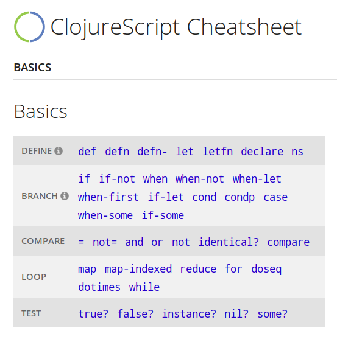

Probabilistic Record Linkage of Hospital Patients
by Chris Oakman
Talk Overview
- Quick Introduction
- Problem Explanation + Definitions
- Deterministic Approach
- Probabilistic Approach
- Lunchtime!
Chris Oakman
- Houston, TX
- Developer, Designer, Educator
- With Luminare in Texas Medical Center (TMCx)
- Some Clojure projects:


- - atom-parinfer
- - vscode-parinfer
- - sublime-text-parinfer
- - parinfer.py
- - parinfer-jvm (for Cursive)
- - parinfer-viml
- - parinfer-elisp
Problem Context
- Sepsis is a big problem in hospitals
- Luminare provides a Sepsis screening tool
- We screen every patient, every shift
- Nurses aim for 100% screening compliance
- Census = list of patients in the hospital
"The census is wrong."
Understanding The Problem
- Patient data from HL7 stream
- Multiple sources
- Different schemas
- Varying quality
- We need to identify all of the same patients
- Match to "our" list of patients
Lesson Learned:
What is Record Linking?
Joining the same "real world" data together from different sources.
Some mesages are very detailed:
{:address {:street "9993 Lola St"
:zip "73924"}
:dob "1980-10-04"
:firstName "Katy"
:lastName "Framingham"
:medicalRecordNumber "55427"
:ssn "710359155"
:visitNumber "442878"
;; also ~300 additional fields:
;; - emergency contacts
;; - insurance information
;; - patient history
;; - and many more
}
Other messages are sparse:
{:F_NAME "BABY GIRL "
:L_NAME "HIGH FEVER"
:SSN 555555555
:VN 888921}
Format / Schema differences:
{:firstName "Katy"
:first_name "Katy"
:F_NAME "KATY "
:socialSecurityNumber "710-35-9155"
:ssn "710359155"
:SSN 710359155
;; visitNumber --> VN
;; medicalRecordNumber --> MR,
;; different codes for floor, unit, room, etc
}
Lesson Learned:
Data Cleaning is Vital
- Without consistent data, nothing else will work correctly
- Tends to be time-consuming and tedious
- Do not skimp here
- clojure.spec is your friend :)
Let's try to match some of these patients!
Lesson Learned:
Deterministic Algorithm
- Good first approach
- Keep it simple
- Think: "secret foreign key"
- Test the result
Can we do better?
- How can we avoid false positives?
- What other information can we use?
Fellegi-Sunter Method
- Assign probability weights to each field
- Match weight (m)
- Non-match weight (u)
- Every field adds or substracts from overall match score
Lesson Learned:
Probabilistic Algorithm
- Works surprisingly well
- Don't overthink the weights: just try something
- Test the result
Lesson Learned:
Do Approximate String Matching
- Improves FS results
- Especially useful for names
- Caution with Levenshtein distance for IDs
Lesson Learned:
Understand Your Data
- Can a person have multiple IDs?
- Is time a useful dimension for matching?
- What else is unique about your data to help identify?
"We love this tool!"
Thank you!
- github.com/oakmac/record-linking-talk
Code is open source: ISC license
- @oakmac1